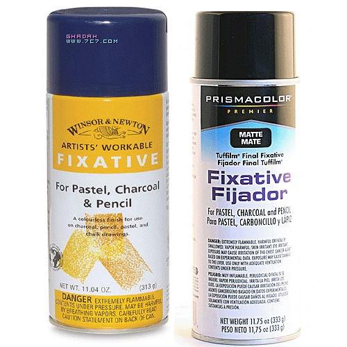

الورق
يوجد في المكتبات أعداد لا حصر لها من ورق الرسم, مايهمنا منها الاصناف الجيدة التي تتناسب مع الغرض الذي نسعى اليه، فورق الرسم الذي يستخدم لقلم الرصاص لايصلح بعضه للرسم عليه بالريشة، حيث يتشرب الحبر وتتشوه الخطوط فيه وبالمثل لايصلح للالوان المائية. عادة نستخدم ورق الكونسون canson ذو الصفحة الحبيبية الناعمة للرسم عليه بقلم الرصاص , ونستعمل ورق بريستول bristol المصقول للرسم عليه بالالوان المائيةأو بالفرشة الخاصة بالحبر الصيني . فكل رسم بالريشة يتطلب ورق من نوعية قوية بحيث لا تترك وبراً اثناء تحركها على الصفحة. ويمكننا أن نتأكد من ذلك بأن ننظر الى الصفحة في الضوء ليظهر الاسم مقروءاً. الاختيار بين الن الورق المصقول والمحبب يعود في كل الحالات الى التقنية المستعملة وللتاثيرات التي يرغب الرسام في ايجادها . فالورق المصقول لا يصلح للرسم عليه باقلام الباستيل الطباشيرية, ذلك لان نعومة اقلام الباستيل لاتوافقها نعومة الورق . وهناك نوع من الورق مالوف وجوده في الاسواق ويعرف بورق الباستيل , وهو غالبا خشن الملمس حتى تظهر الالوان عليه زاهية وذات مسحة فنية اجمل. الورق الخشن الملمس هو الذي يستعمل ايضا للرسم المائي فالورق المصقول لا يعطينا التاثير الفني الذي نرغب فيه , بينما يتجاوب معنا الورق الخشن ويعطينا نتائج مرضيه . وهناك انواع عالمية مشهورة من هذا الورق افضلها ماحمل اسم فابريانو fabriano وهو ايطالي الانتاج وكذلك هواتمان whatman وهو انجليزي الصنع. نستعمل للرسم الزيتي صنف خاص من القماش نجده جاهزا في المكتبات المتخصصة ببيع ادوات الرسم , واجوده ما كان سميكا وعلى سطحه حبيبات خشنة لاتها تزيد في جمال اللوحة.اقلام الرصاص
اقلام الرصاص اما لينة او صلبة ونميز بينها بواسطة الاحرف والارقام : 1،2،3 الرقم 1 الاكثر لينا يليه الرقم 2 فالرقم 3 الذي هو اكثر صلابة وبالتالي اقل سوادا . اما الافلام ذات الاحرف فإن اللين منها يبدأ بحرف B ويتدرج حتى 8B والقاسي منها يبدأبحرف H ويتدرج حتى 8H . نستعمل الاقلام اللينة للتظليل ونستعمل الاقلام الصلبة للرسم الدقيق كالرسم الهندسي. بعد ذلك يأتي قلم رقم HB وهو بين الصلابة والليونة ويستخدم بكثرة في الكتابة ويماثله القلم المرقوم F . وهنا لابد من الاشارة الى ان الممحاة قد تسبب ضررا للوحة اذا كانت قديمة او رديئة الصنع , فالمعروف عن طبيعة المطاط الذي تتنتج منه الممحاة انه يجف او يتميع بمرور الزمن , لذلك ينبغي اختيار الممحاة بعناية , والممحاة الجيدة هي التي يمكنك ثنيها من دون ان تتشقق.اقلام الفحم
تتوفر اقلام الفحم في المكتبات بشكلين : الاول بشكل قضبان اسطوانية , والثاني بشكل خشبي كأقلام الرصاص. وتتنوع هذه الاقلام طبقا للارقام المسجله عليها , واللتي تبدا من الرقم صفر حتى الرقم 3. الرقم صفر هو الاكثر ليونة بينما الرقم 3 اكثر صلابة . لكن التتابع الخاص بشركة “كونته” ينعكس , فالرقم3 اكثر ليونة والرقم صفر اكثر صلابة , ويعود ذلك الى ان الشركة تميز نفسها بهذا الترقيم الانها اول من اكتشف اقلام الفحم. في الرسم بافحم تغدو الممحاة اداة اساسية , فدورها ليس الفقط محو الاخطاء بل تعديل الرسم باظهار الفراغ وتقطيع الاقسام . ويوجد نوع من الممحاة علىشكل عجينة مطاطية يمكنك تكييفه بين اصابعك كما تشاء , وتحصل منها على سنن مدببة تساعدك على ازالة ادق اللمسات
الألوان المائية
تتوفر الالوان المائيةبثلاثة اشكال . الاول : مساحيق ناعمة محفوظة في علب خاصة, الثاني : معاجين مائعة محفوظة ضمن انابيب معدنية , الثالث: علب تحتوي على اقراص جافة. تمتاز الالوان المائية بشفافيتها , لذلك لا يستحسن ان تخلط باللون الابيض للحصول على اللون الافتح الا بمقدار يسير جدا , كذلك يجب التأكد من مناسبة اللون قبل وضعه على الورقة لأنه ليس من السهل تغيير لون المساحة الملونة بعد تلونها
الألوان الزيتية
يرجع الفضل في اكتشاف الالوان الزيتية الى الاخوين الهولنديين : هيوبرت وجان فان إيك . والالوان الزيتية في اساسها ليست سواء مساحيق معجونة بالزيت المستخرج من بذر الكتان أو بغيره من الزيوت. أما الألوان مصادرها طبعية أوكيميائية , ويستحسن استعمال الالوان الطبيعية لأنها اكثر ثباتا أقل تاثرا بالضوه ولا تتفاعل كيميائيا عند مزجها بعضها ببعض . وهي بعكس الالوان المائية , حيث بالامكان تغيير لون المساحة الملونة بوضع اللون الذي نرغبه فيها .

المادة المثبتة
المثبت هو مادة سائلة تتألف من اذابه الصمغ بالكحول . ويستعمل لتثبيت الرسوم على اللوحة كي لا تتسخ أو تتلاشى وخصوصا الرسوم المرسومة بالفحم أو بالاقلام الملونة . يتوفر المثبت في المكتبات بشكل سائل معبأ في زجاجات للاستعمال بواسطة المضخة , وأو بشكل علب معدنية يخرج السائل منها بضغط بسيط من الابهام, ومن الافضل رش الصورة وهي بوضع افقي , وبعناية كي لا تتأثر الصورة بالهواء المضغوط .
ألوان الاكريليك
ألوان الأكريليك سريعة الجفاف جداًُ .. و يمكن إستخدامها مباشرة من الأنبوب كالألوان الزيتية أو بإضافة الماء أو الوسائط المتعددة كالألوان المائية ..
الحبر الصيني
مادة لونية سائلة محفوظة عادة في زجاجات صغيرة الحجم . يلون به على الأوراق البيضاء المصقولة واللماعة . نلون به المساحات ، بواسطة فرشاة الأكواريل الناعمة ، ونرسم به خطوط بواسطة الريشة المعدنية.
ألوان الزجاج
ألوان الرسم على الزجاج ذات أساس غير مائي للزجاج والبوليستر والمعدن لماعة وقوية تجف في الهواء لكن بعيدا عن الغبار ..ذات مقاومه قوية للضوء ( لا تبهت ) وخاصه ألوان فيترال بيبيو… ألوان مختلفة مع مخففات خاصة بها – فيتراي والفرنيش وهناك المحددات بالوان مختلفة .. وهي تقوم بتحديد التصميم ومنع تمازج الألوان مع بعضها … ةتنظف الفرش بمخفف فيتراي أو وايت سبيريت بستخدم للتلوين فرش ناعمة الشعر وهناك من يستخدم القطارة حتى يوزع اللون بالتساوي ولا يحدث ملمس كما ما تفعله الفرشاه ..
ألوان الرسم على الحرير
ألوان مائية يمكن تثبيتها بواسطة المكواة زاهية وبراقة تحفظ لمعية وليونة الحرير هناك ألوان: مختلفة ومحددات رليف ومخفف اللون سيتاسيلك وغوتا مائية لتكثيف اللون .الأقلام الملونة ( الألوان الخشبية )
مواصفاتها كمواصفات أقلام الرصاص إلا أنها ذات أنواع عدة، فهناك ماهو دارج، مثل أقلام الجرافيت الملونة، وهناك اقلام الألوان المائية . بعد التلوين .. تمرر الفرشاة المبلوله بالماء .. على التصميم وأقلام الألوان الزيتية بعد التلوين يتم إستخدام الفرشاة والتربنتين / زيت الألوان الزيتية .. على الرسمة او التصميم ..
الحامل / ستاند
وهي عبارة عن اطار خشبي بأرجل لحمل اللوحة الفنية أثناء العمل عليها ،،، وهي تختلف من حيث الحجم والوزن والشكل وفق الإستخدام ووزن اللوحة .. ورق ام خشب ام قماش … وايضا بإختلاف المكان داخل استيديو ام خارجه ….